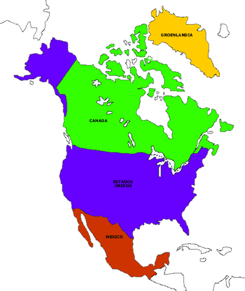
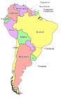

<!--
  Generated template for the AmericaPage page.

  See http://ionicframework.com/docs/components/#navigation for more info on
  Ionic pages and navigation.
-->
<ion-header>

  <ion-navbar color="nuevo">
    <ion-title>América</ion-title>
    <!--<ion-buttons>-->
      <!--<button ion-button icon-left (click)="mostrarMenu()">-->
        <!--<ion-icon name="menu"></ion-icon>-->
      <!--</button>-->
    <!--</ion-buttons>-->
  </ion-navbar>

</ion-header>


<ion-content padding>
  <div text-center>
    
    <!--<button ion-button outline (click)="irAbecedario()">Abecedario</button>-->
    <!--<button ion-button outline [navPush]="pokedex">Pokedex</button>-->
  </div>
  <br>
  <div text-center>
    
    <!--<button ion-button outline (click)="irNumeros()">Numeros</button>-->
    <!--<button ion-button outline [navPush]="pokedex">Pokedex</button>-->
  </div>
  <br>
  <div text-center>
    
    <!--<button ion-button outline (click)="irColores()">Colores</button>-->
    <!--<button ion-button outline [navPush]="pokedex">Pokedex</button>-->
  </div>

</ion-content>
